Brass, mirror-polished
Welded, inflated and mirror-polished. Lacquered in six layers with instrument lacquer and kiln-fired at 185 °C: a flawless, deeply reflective surface that mirrors and reimagines the room and the viewer.
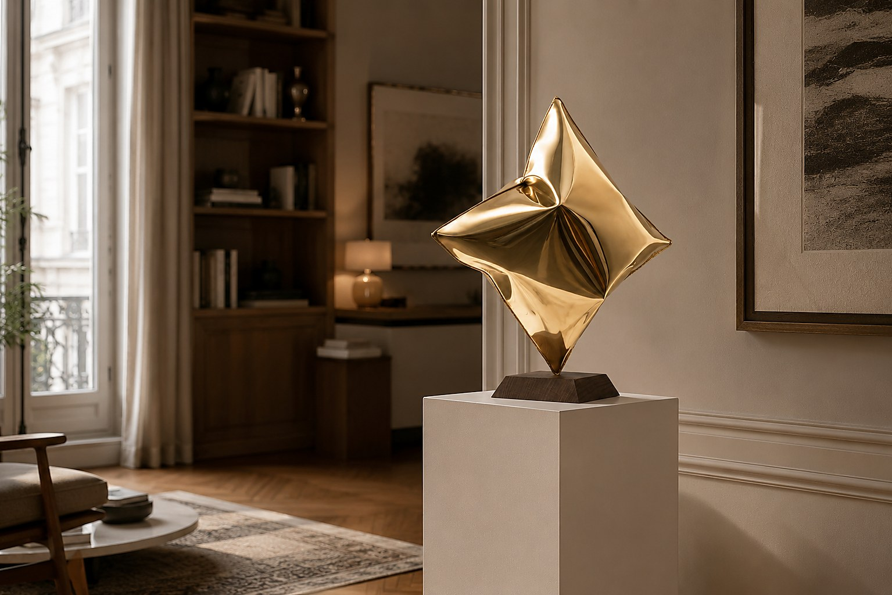
ART DROP
INTRODUCTORY PRICE
12–14 SEPTEMBER
INTRODUCTORY PRICE ENDED
STILL AVAILABLE
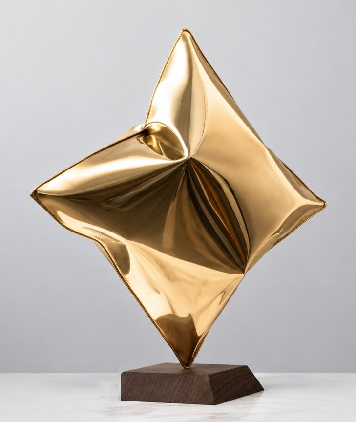
Handcrafted, one of a kind
EARLY ACCESS IN
Pillow No. 1: a pillow, stopped at the moment of inflation. What ought to feel soft is mirror-polished brass. Every piece is welded and inflated by hand, and no two are alike.
Introductory price
€1,950
SECURE THE WORKOnly until 14 September, 23:59. After that Pillow No. 1 stays available and the price rises.
The introductory price has ended
Pillow No. 1 stays available. The current price is on the product page.
GO TO THE WORKYou are in.
Your Early Access invitation reaches you on 11 September at 09:00.
We will be in touch as soon as the next Art Drop begins.
Every Pillow is welded and inflated one at a time. The form comes out differently each time, which is why every piece is one of a kind.
Welded, inflated and mirror-polished. Lacquered in six layers with instrument lacquer and kiln-fired at 185 °C: a flawless, deeply reflective surface that mirrors and reimagines the room and the viewer.
The base sets a warm contrast to the cool metal surface and grounds the sculpture with natural presence. 15.5 × 15.5 × 4 cm.
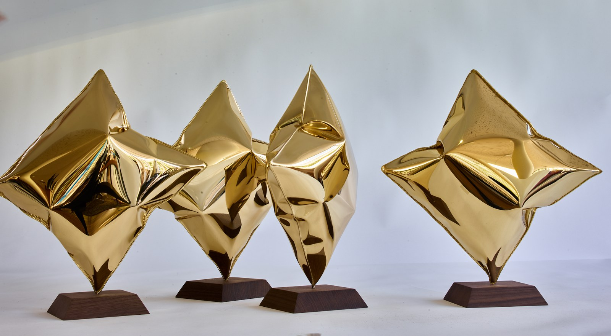
As part of a unique edition, each Pillow is a one-of-a-kind piece, signed by the artist with date and edition number.
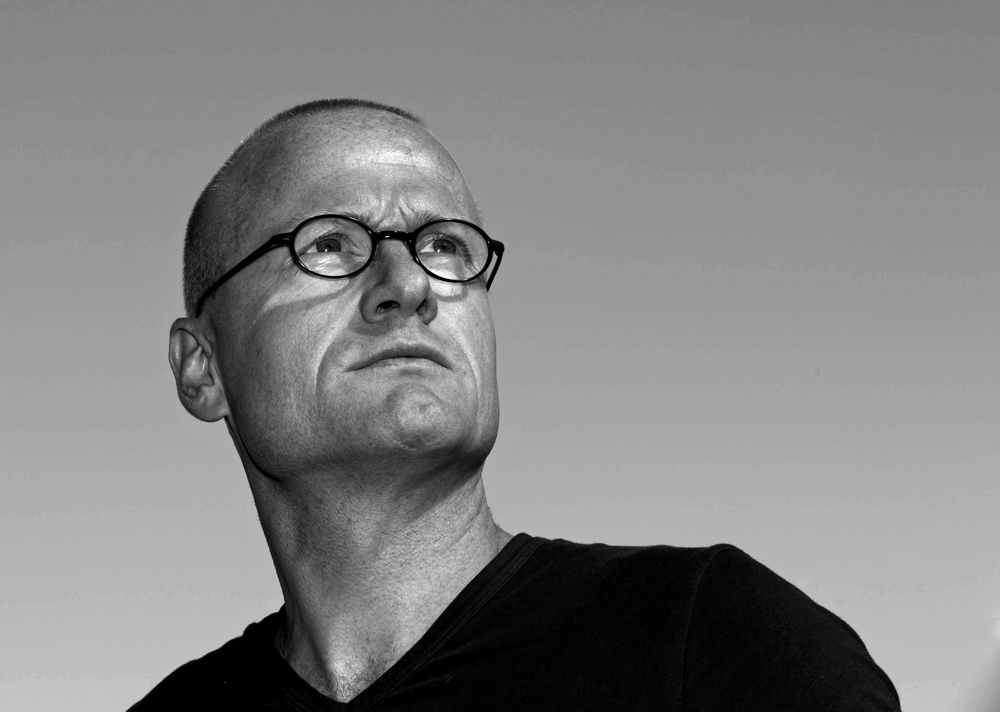
The artist
Rafael Neff, born in Freienseen in 1969, studied photography in Mainz, Prague and New York and was a master student of Kevin Clarke. He became known for interiors without people, where beach chairs turn into sculptures and libraries into cathedrals. For many years he has also worked in brass and copper: high-gloss polished surfaces that write reflection, depth and presence into the work.
44 × 44 cm on a 15.5 cm base: the sculpture takes little space and still changes how a room feels.
SECURE THE WORK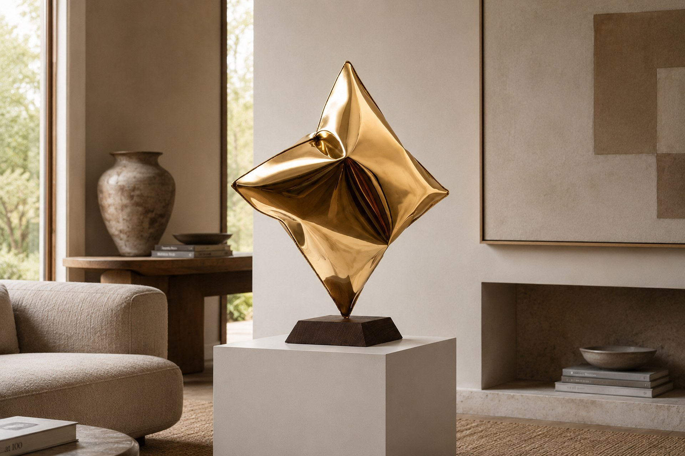
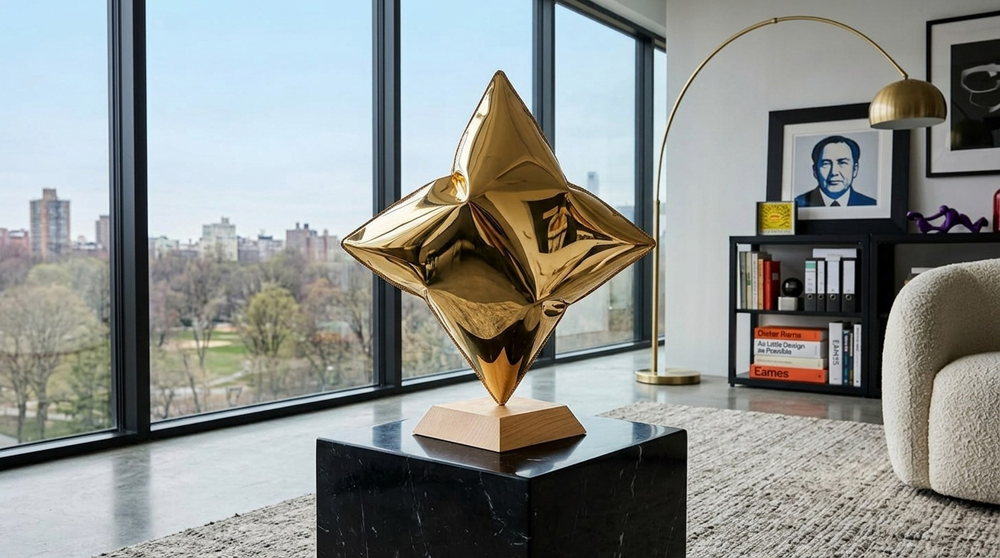
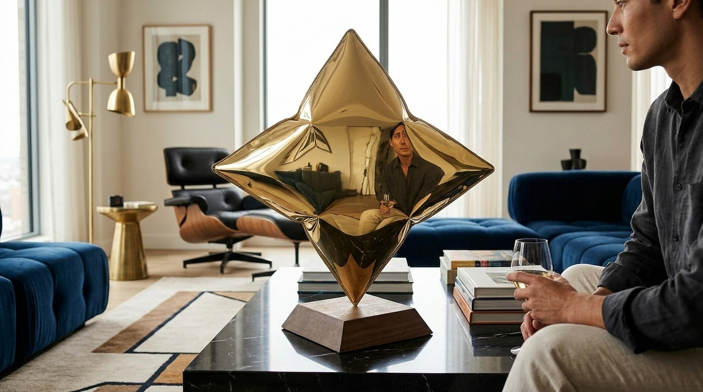
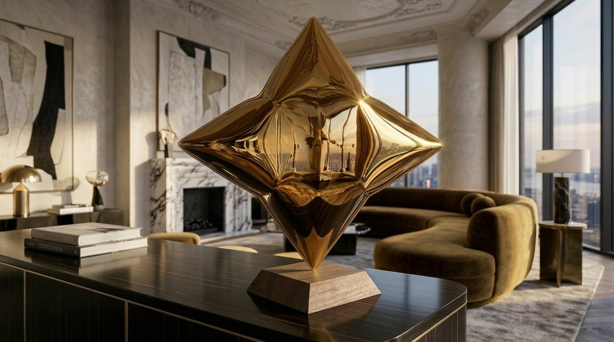
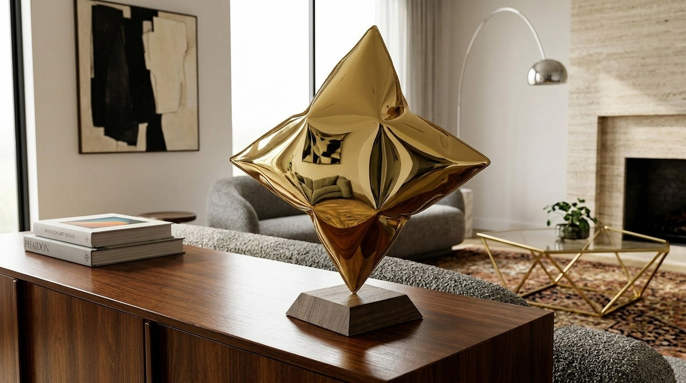
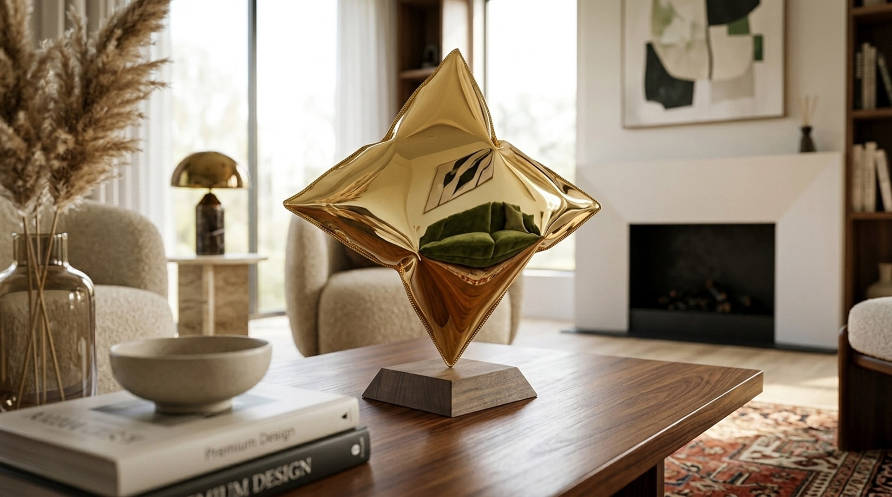
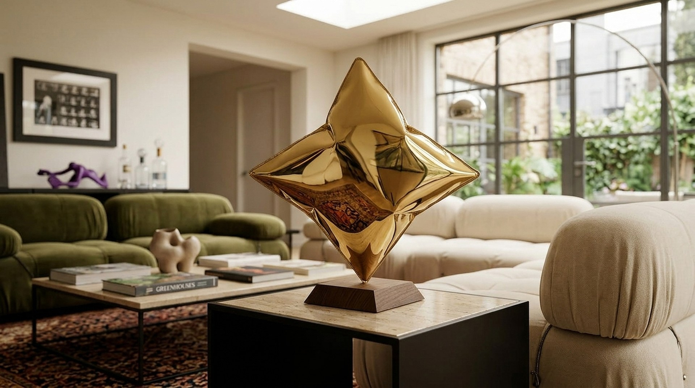
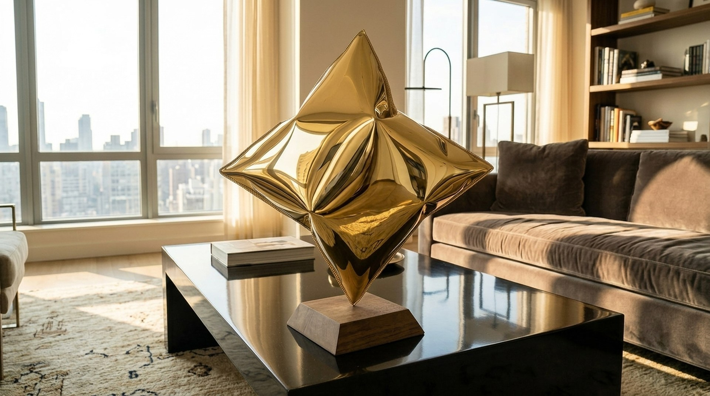
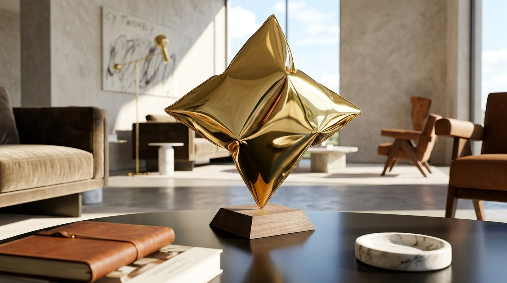
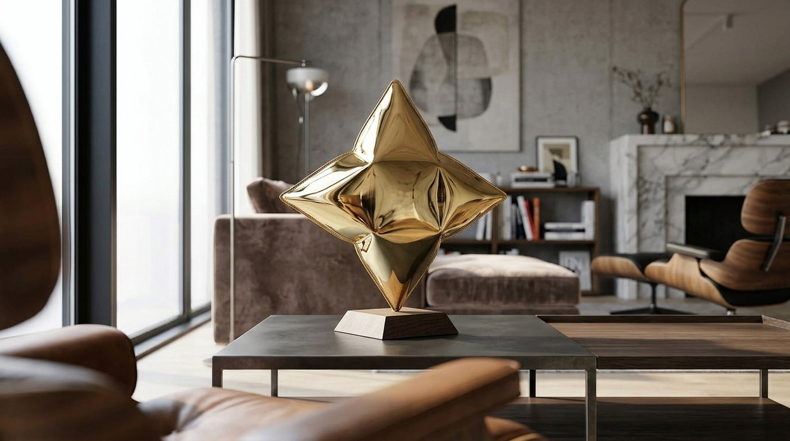
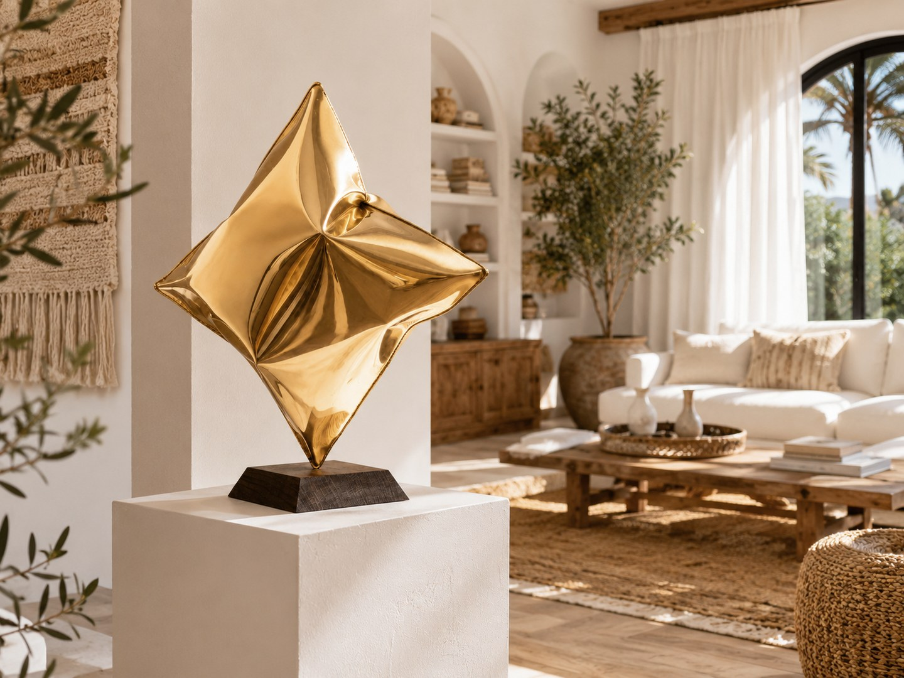
A pillow carries the trace of the evening before. Here that trace is welded into brass, and stays.
Soft things are taken to be fleeting. They give way, they lose their shape, in the morning they are smoothed out again. Rafael Neff stops the moment before: welded, inflated, mirror-polished, lacquered in six layers with instrument lacquer and kiln-fired at 185 °C. The soft gesture becomes a hard, deeply reflective surface in which the room and the viewer appear. What remains is the memory of a touch, in a material that outlasts it.
330,000 satisfied collectors
since 2004
See works in person
60-day right of return
no reason required
Sign up and get access on 11 September at 09:00,
before the edition opens to the public.
of 999 verkauft
The introductory price of €1,950 runs only until 14 September, 23:59. After that Pillow No. 1 stays available and the price rises.
SECURE THE WORKPillow No. 1 stays available, at a higher price. Sign up so you do not miss the next Art Drop.
GO TO THE WORK